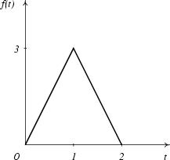
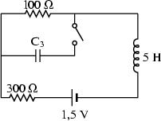
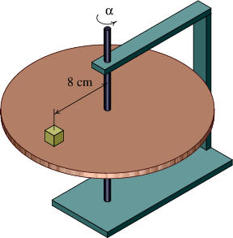

Psimage es un conjunto de macro-instrucciones escritas em lenguaje PostScript, que pueden ser usadas para producir diagramas y figuras. Lo único que es preciso para usar estas macros es un editor de texto y una impresora PostScript; por eso pueden ser usadas con cualquier sistema operacional y con casi cualquier impresora, ya que una gran parte de impresoras pueden emular postscript con ayuda de programas como ghostscript.
En esta versión psimage está como un script Bash que se puede descargar en: psimage. El programa Bash se encuentra disponible para varios sistemas operativos diferentes. Ejecutando el programa psimage sin argumentos, obtendra un resumen de su uso. Necesitará tener el programa ghostscript instalado y si quiere producir ficheros PNG, también el paquete Imagemagick.
La ponencia presentada en el congreso Hispalinux en Madrid (5-6 Nov. 1999) y los ejemplos abajo sirven de documentación, aunque hay que tener cuidado pues fueron escritos para la versión 1 y el nombre de algunas macros ha cambiado en la versión 2.
|  | Este es un ejemplo simple de una gráfica de una función. Otros ejemplos mas complicados se encuentran en "outros ejemplos". Las intrucciones que dieron origen a esta gráfica se encuentran en el fichero triangular.psi. La "BoundingBox" fué calculada con ayuda de gv. |
|  | Para dibujar cada elemento en el circuito eléctrico, se dan las coordenadas polares, por ejemplo (40,90) es un tramo de circuito de 40 puntos apuntando para arriba, seguidas del nombre del elemento de circuito. Fichero fuente. |
 | Todo el mecanismo complejo del disco, ejes, soportes y bloque sobre el disco, fueron creados con unicamente dos macros de psimage: Cylinder y Block. Aquí ilustramos también el uso de colores. Fichero fuente |
Existe otra página con otros ejemplos
Ultima actualización: 05-07-2007